This tutorial demonstrates how to use the GUI builder, GWT Designer, to create and design a Stock Watcher application based on the GWT tutorial. To get the most out of this tutorial make sure to at least skim over the GWT Tutorial. Also, they intentionally introduced a bug that they later fixed. We're going to skip that and just have the code already fixed in this tutorial.
Requirements:
Before you can start with the tutorial, you must install a supported version of the following:
Eclipse, Java 1.5 or higher,
GWT Designer (Full stand-alone version), and the
GWT SDK or
Google Plugin for Eclipse (includes GWT SDK)
Note: This tutorial was created in Windows XP using GWT Designer 2.3, GPE 2.3, Eclipse 3.7 & Java 1.6.
Special thanks to Chad Lung for creating this tutorial.
Assuming everything is installed lets go ahead and begin.
If you installed the Google Plugin for Eclipse (GPE), this step is not needed (GWT Designer will just use the SDK included with the GPE). Do this only if you downloaded the stand-alone GWT SDK zip file. The path would be the directory you unzipped the GWT SDK to (the dir just above the /doc subdirectory).

Next, we need to create a new GWT Java project. Select File > New > Project... from the main menu. From the new project window expand WindowBuilder > GWT Designer > Model and select GWT Java Project.
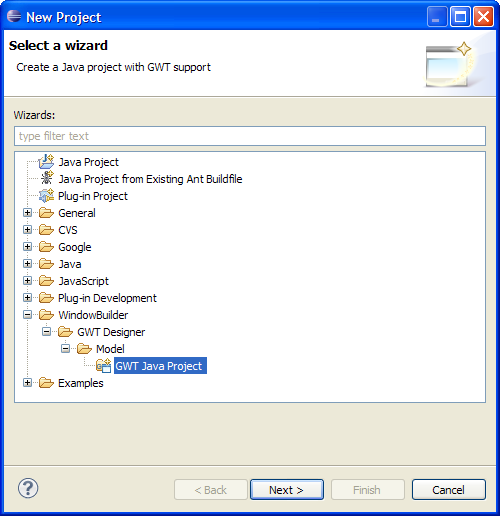
Press the Next button.
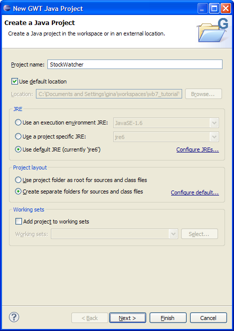
In the New Project screen enter StockWatcher for the project name and press the Next button. In the following screen click on the Create GWT Module checkbox and enter StockWatcher for the Module name and com.google.gwt.sample.stockwatcher.StockWatcher for the Package name.
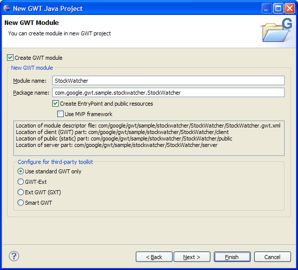Press the Finish button. GWT Designer automatically generates the necessary files and configures your GWT project.
You should see some code that looks like the following in the StockWatcher.java file:
We are going to get rid of the "Hello World" boilerplate code and button. Click on the Design tab at the bottom of the source file editor and GWT Designer will render a visual layout of our page. If you don't see the Design tab, right click on the Java class and select Open With > WindowBuilder Editor.
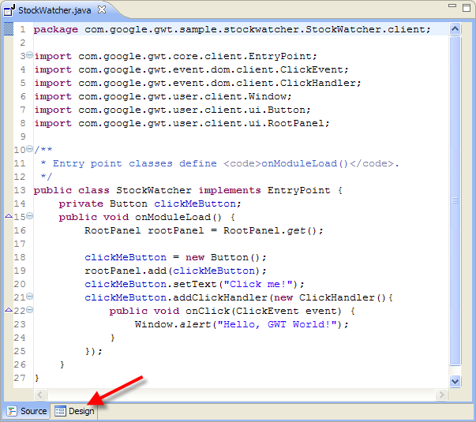When you're in Design mode, you should see the Designer's Palette that lists all the supported Panels and Widgets and the Properties pane for editing widget properties. Let's remove the button so click on the "Click me!" button and press Delete.
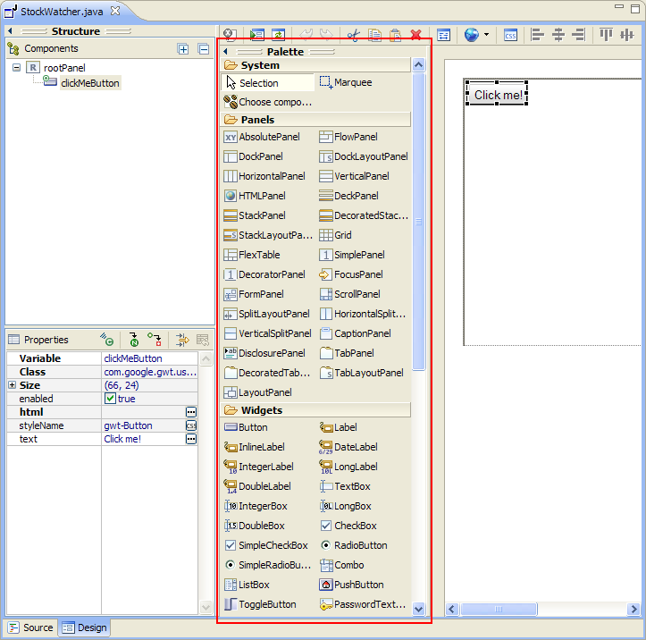
Make sure to Save your project.
According to the GWT tutorial our end product will look like this:
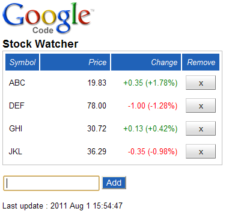
Lets start designing the UI now. The first thing we add is a vertical panel. In the GWT Designer Pallette, locate the "Vertical Panel" from the "Panels" category and click on it. Then simply click inside the root panel/content area to place it.
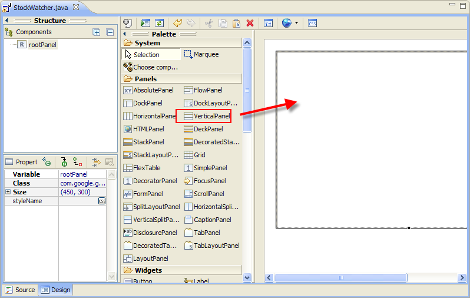Adjust the size by dragging the corner of the vertical panel and change the vertical panel's "variable" property to "mainPanel".
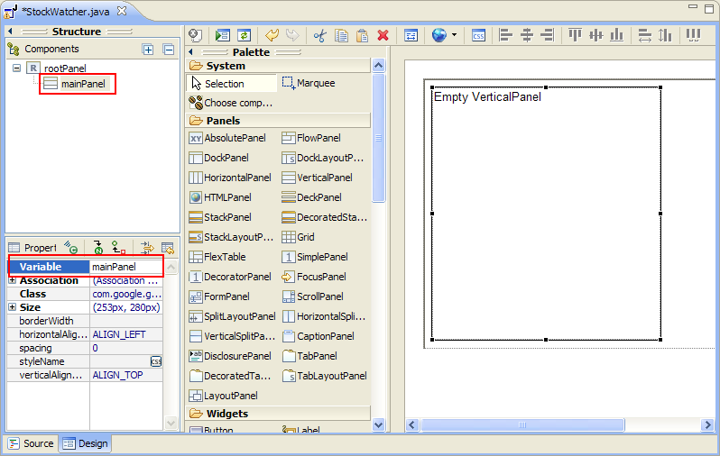Inside of this Vertical Panel we need several other items. The first is the FlexTable.
So click on the FlexTable and then click inside of the vertical panel
to place it near the top. Change the FlexTable's variable property to
"stocksFlexTable". Now, click on the Horizontal Panel and place it below the FlexTable and change it's variable name to
"addPanel". Inside of the Horizontal Panel we will add two items:
1. A TextBox with the variable name "newSymbolTextBox"
2. A Button next to the TextBox. Set the variable name to "addButton" and a text property value of "Add"
Finally add a Label below the Horizontal Panel and change it's variable name to "lastUpdatedLabel".
When all that's done, it should look something like the next screen:
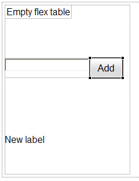Now before we do anything else, we need to convert these panels and widgets into local fields. The easiest way to do this is to let the GWT Designer do it for you. Click on the top most panel, the Vertical Panel called "mainPanel" in the Designer and then click the Properties toolbar item Convert local to field.
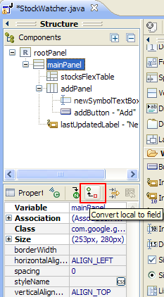
Now, do this for the FlexTable, Horizontal Panel, TextBox, Button and the Label. You can avoid doing this in the future if you go into the GWT Designer's preferences settings and change the Variable generation to Field so that your variables are always declared as class level variables.
Let's take a peek at the generated source code by clicking the Source tab.
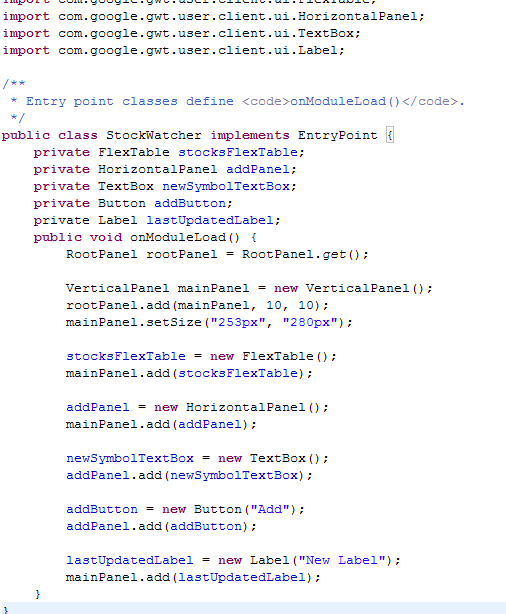Back to Design mode, click on the textbox and set it's focus property to true. If you don't see the focus property, click on the Show advanced properties toolbar item on the Properties pane. Setting the "focus" property to true will make it so when the page loads in a browser the focus is set to the textbox right away.
Lets go into the source code now by clicking on the Source tab. Find the stocksFlexTable initialization code. We are going to add to this code to setup the FlexTable in order to display the stock information. Add the following setText() to look like this:
stocksFlexTable = new FlexTable();
//Add these lines
stocksFlexTable.setText(0, 0, "Symbol");
stocksFlexTable.setText(0, 1, "Price");
stocksFlexTable.setText(0, 2, "Change");
stocksFlexTable.setText(0, 3, "Remove");
mainPanel.add(stocksFlexTable);
Make sure to Save.
At this point in the GWT tutorial they run the project to have a look at everything so far. We'll do the same. Right-click on the project in Eclipse and select: Run-as -> GWT Application
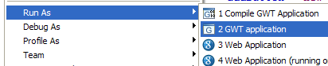
Click Launch Default Browser.
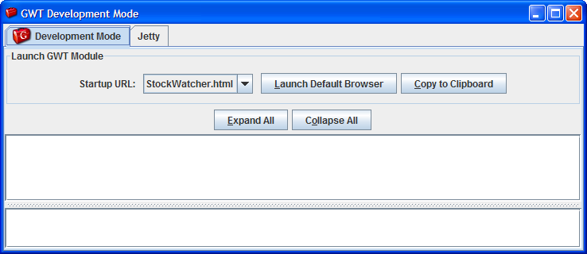
If all goes well, you should see something similar to this:
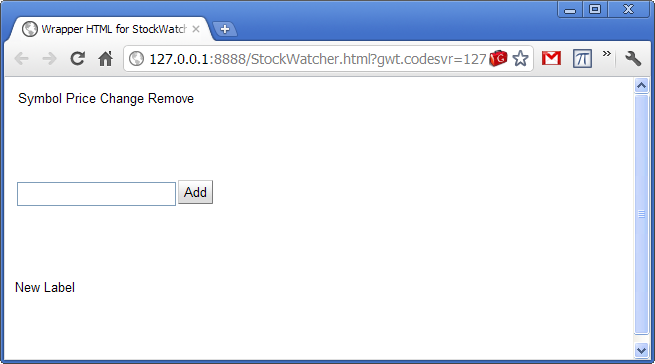
Well that's kinda ugly so far, but we'll fix that. Right now we are going to move on to the event listeners. We are going to add a listener for when the button is clicked as well as when a keydown event is triggered in the textbox.
Adding event handlers with GWT Designer is very simple. To add an onClick event, switch to design mode and then right-click on the "Add" button. Select Add Event Handler > click > onClick. It will automatically setup the event in the code and drop us into that spot.
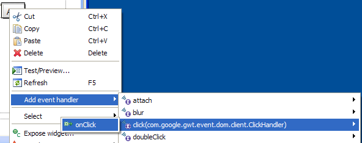
Now lets add the key event for the textbox using the properties pane. Go back to the designer and click on the textbox beside the "Add" button. Go over to the properties and click on the Events tool item. 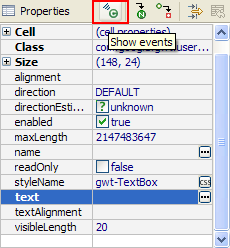Drill down into the keyPress -> onKeyPress event and double click there. It will add the event listener for us and again drop us into the code.
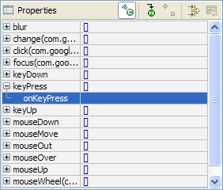According to the GWT Tutorial we need to call the "addStock()" function every time the button is clicked or the Enter key is pressed in the textbox. So inside the onKeyPressed() and onClick() events, we need to add the call to a method called addStock(). Lets modify the onKeyPress a little bit more to catch just the Enter key when it's pressed down.
newSymbolTextBox.addKeyPressHandler(new KeyPressHandler() {
public void onKeyPress(KeyPressEvent event) {
if (event.getCharCode() == KeyCodes.KEY_ENTER){
addStock();
}
}
});
addButton.addClickHandler(new ClickHandler() {
public void onClick(ClickEvent event) {
addStock();
}
});
Note: Depending on your Eclipse configuration, it might create the addStock method with an access modifier of protected. Since, you aren't going to subclass StockWatcher, you'll have to change its access to private.
The GWT Tutorial is now moving us onto implementing some client-side functionality. Basically we want to validate what a user types into the textbox to make sure its as valid as possible. For this we need to add some code to the "addStock()" function. Switch to the source tab and hand-code/copy-paste the following:
private void addStock() {
final String symbol = newSymbolTextBox.getText().toUpperCase().trim();
newSymbolTextBox.setFocus(true);
// Stock code must be between 1 and 10 chars that are numbers, letters, or dots.
if (!symbol.matches("^[0-9A-Z\\.]{1,10}$")) {
Window.alert("'" + symbol + "' is not a valid symbol.");
newSymbolTextBox.selectAll();
return;
}
newSymbolTextBox.setText("");
// TODO Don't add the stock if it's already in the table.
// TODO Add the stock to the table.
// TODO Add a button to remove this stock from the table.
// TODO Get the stock price.
}Go ahead and run the project again as we did before. Type in some invalid characters into the textbox and try the "Add" button. Now try the "Enter" key in the textbox.
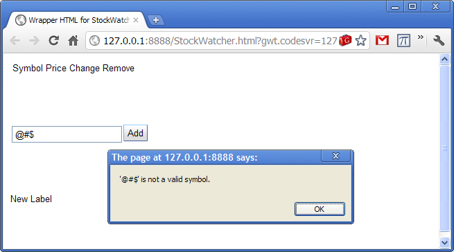Its time to actually be able to add a stock to the list. First, we are going to need to pull in some help from the standard Java ArrayList. Also we to need to add an import at the top of the source code as well as a variable for the new ArrayList.
import java.util.ArrayList;
public class StockWatcher implements EntryPoint {
private FlexTable stocksFlexTable;
private VerticalPanel mainPanel;
private TextBox newSymbolTextBox;
private Button addButton;
private Label lastUpdatedLabel;
private ArrayList <String> stocks = new ArrayList<String>(); //Add this line
Here is the "addStock" function in full:
private void addStock() {
final String symbol = newSymbolTextBox.getText().toUpperCase().trim();
newSymbolTextBox.setFocus(true);
// symbol must be between 1 and 10 chars that are numbers, letters, or dots
if (!symbol.matches("^[0-9a-zA-Z\\.]{1,10}$"))
{
Window.alert("'" + symbol + "' is not a valid symbol.");
newSymbolTextBox.selectAll();
return;
}
newSymbolTextBox.setText("");
// don't add the stock if it's already in the watch list
if (stocks.contains(symbol))
return;
// add the stock to the list
int row = stocksFlexTable.getRowCount();
stocks.add(symbol);
stocksFlexTable.setText(row, 0, symbol);
// add button to remove this stock from the list
Button removeStock = new Button("x");
removeStock.addClickHandler(new ClickHandler() {
public void onClick(ClickEvent event) {
int removedIndex = stocks.indexOf(symbol);
stocks.remove(removedIndex);
stocksFlexTable.removeRow(removedIndex + 1);
}
});
stocksFlexTable.setWidget(row, 3, removeStock);
}Run the project again (or refresh the browser if it's still running). Play around adding and removing some stock symbols.
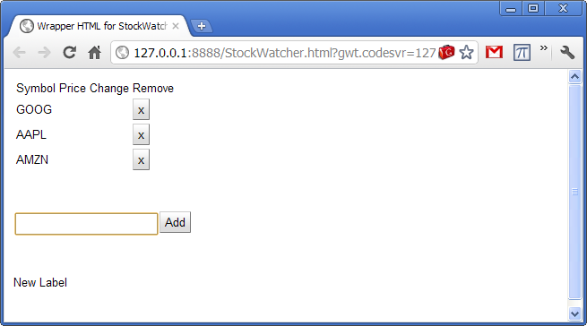If we want to simulate stock prices changing throughout the day for our demo we will need to add a timer class to refresh the prices. In this case we will be making up our own random prices so obviously you won't want to be using this for real stock trading!
Lets call in the timer class from GWT:
First, add an import statement...
import com.google.gwt.user.client.Timer;Now we can add this code to the bottom of the "onModuleLoad":
// setup timer to refresh list automatically
Timer refreshTimer = new Timer() {
public void run()
{
refreshWatchList();
}
};
refreshTimer.scheduleRepeating(REFRESH_INTERVAL);
Add this code to the top of the StockWatcher class to define the REFRESH_INTERVAL:
private static final int REFRESH_INTERVAL = 5000;You can also add the "refreshWatchList()" the same way we added the "addStock()" function using the hover over tooltip and selecting the bottom option of the two that will be available.
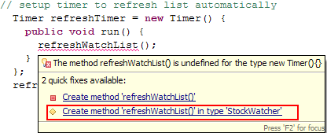We'll now add a "StockPrice" class. Right-click on the com.google.gwt.sample.stockwatcher.client package and choose: File -> New -> Class. Give the class the name: StockPrice. The rest of the defaults should be fine. Press the "Finish" button.
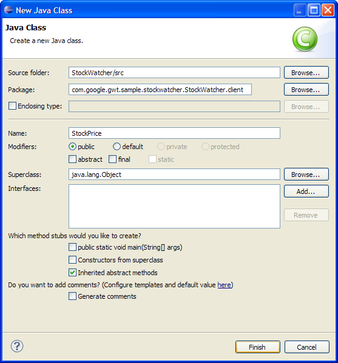
Here is the completed StockPrice class:
package com.google.gwt.sample.stockwatcher.StockWatcher.client;
public class StockPrice{
private String symbol;
private double price;
private double change;
public StockPrice()
{
}
public StockPrice(String symbol, double price, double change)
{
this.symbol = symbol;
this.price = price;
this.change = change;
}
public String getSymbol()
{
return this.symbol;
}
public double getPrice()
{
return this.price;
}
public double getChange()
{
return this.change;
}
public double getChangePercent()
{
return 100.0 * this.change / this.price;
}
public void setSymbol(String symbol)
{
this.symbol = symbol;
}
public void setPrice(double price)
{
this.price = price;
}
public void setChange(double change)
{
this.change = change;
}
}
Go back to the StockWatcher source code and add the following import:
import com.google.gwt.user.client.Random;
import com.google.gwt.i18n.client.DateTimeFormat;
import com.google.gwt.i18n.client.NumberFormat;
import java.util.Date;
What we want to do is populate an array of StockPrice objects with some values and then pass them onto a function that will update the FlexTable. We can now finish off the "refreshWatchList" function with the following code:
private void refreshWatchList(){
final double MAX_PRICE = 100.0; // $100.00
final double MAX_PRICE_CHANGE = 0.02; // +/- 2%
StockPrice[] prices = new StockPrice[stocks.size()];
for (int i = 0; i < stocks.size(); i++)
{
double price = Random.nextDouble() * MAX_PRICE;
double change = price * MAX_PRICE_CHANGE
* (Random.nextDouble() * 2.0 - 1.0);
prices[i] = new StockPrice((String) stocks.get(i), price, change);
}
updateTable(prices);
}
Go ahead and hover over the red squiggle under the "updateTable" and add the function just as we have twice before or copy and paste the code below:
private void updateTable(StockPrice[] prices){
for (int i = 0; i < prices.length; i++)
{
updateTable(prices[i]);
}
// change the last update timestamp
lastUpdatedLabel.setText("Last update : "
+ DateTimeFormat.getMediumDateTimeFormat().format(new Date()));
}
We need to also have this method capable of taking single StockPrice objects.
Here is the code:
private void updateTable(StockPrice stockPrice) {
// make sure the stock is still in our watch list
if (!stocks.contains(stockPrice.getSymbol()))
{
return;
}
int row = stocks.indexOf(stockPrice.getSymbol()) + 1;
// Format the data in the Price and Change fields.
String priceText = NumberFormat.getFormat("#,##0.00").format(stockPrice.getPrice());
NumberFormat changeFormat = NumberFormat.getFormat("+#,##0.00;-#,##0.00");
String changeText = changeFormat.format(stockPrice.getChange());
String changePercentText = changeFormat.format(stockPrice.getChangePercent());
// Populate the Price and Change fields with new data.
stocksFlexTable.setText(row, 1, priceText);
stocksFlexTable.setText(row, 2, changeText + " (" + changePercentText + "%)");
}
Lets run this again and test it out.
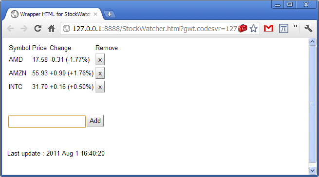We are getting to the end, therefore its time to make this a little more pleasing to the eye. Fortunately GWT Designer makes this downright simple from a developers perspective.
Let's now add a logo to the StockWatcher application. In particular they use this one (right-click and save it). Create a /images directory in your Project/war directory.
/war/images
Right-click on the /war/images package in Eclipse and choose "import" from the menu. Then in the "Import" window choose: General -> File System
Browse to where the logo is and import it.
Go into the GWT Designer and click on the Image widget and place it above the FlexTable. Once that is in place go to the Image's properties and set it's URL to the logo. Clicking the button with the "..." will make it very easy to locate the image file.
While we're adding new widgets, lets also add a Label widget below the image and set it's text property to "Stock Watcher". The GWT Tutorial actually adds this in the beginning, I purposely put it off until now since I wanted to style it right away. Your UI should now look like this (click on the image to make it larger):
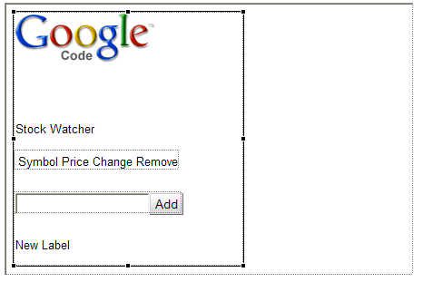
Let's style the "Stock Watcher" label now. GWT Designer's CSS support is straightforward. Go to the label's properties and select the "styleName" property and click on the button on the right side.
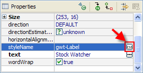
The CSS Style Editor window opens. Click the button and change the default style name to .gwt-Label-StockWatcher. Press OK to close the dialog.
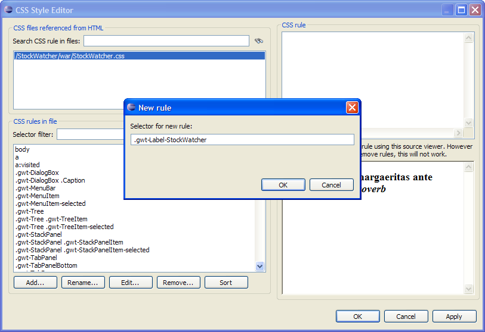
With the .gwt-Label-StockWatcher style selected, press the button. Set the size to "18" and the weight to "bold" and then press "Ok" to close the CSS Rule Editor.
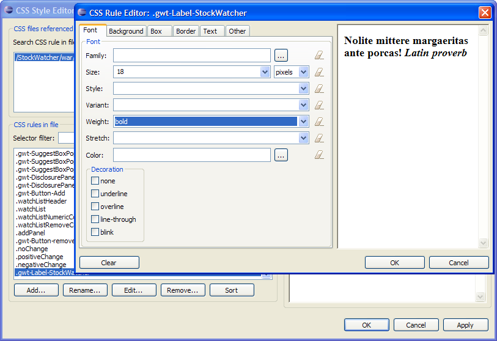
In the CSS Style Editor, press to apply the styleName and close the CSS Style Editor. The StyleName property should now have .gwt-Label-StockWatcher assigned.
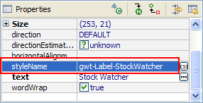
Let's style the Add... button. Go to the GWT Designer if you're not there already and click on the "Add" button. Go to its properties and click on the in the "styleName" to open up the CSS Style Selection window. Click Add and change the style name to ".gwt-Button-Add" then press "Ok". Click "Edit" and style the button as you wish. Here is what I did: Set Font Size to 14; Font Color to White; Background Color #2062B8.
The css rules are stored in the StockWatcher.css file. You can add/edit styles in Source or Design mode.
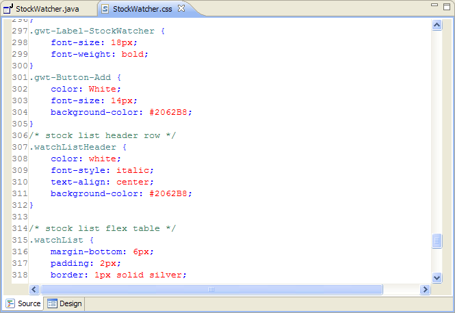
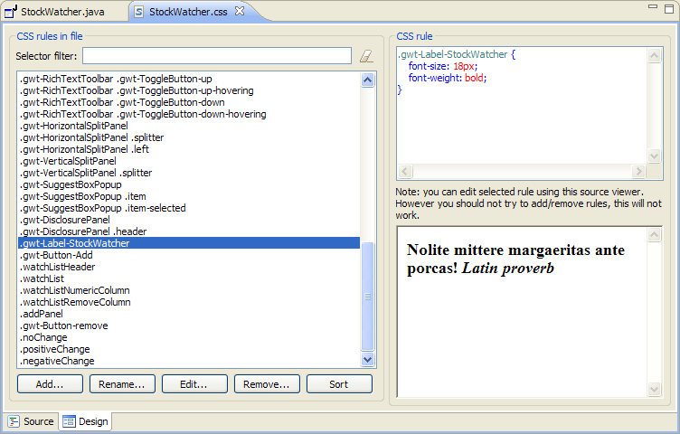
You can see how simple this is to quickly style your application and keep in mind we are barely scratching the surface of what is possible, again, see the GWT Tutorial on styling. I won't walk through all the controls and styling them, but keep in mind you can style dynamically too. So for instance in the GWT Tutorial they style it so that when a stock's price goes up it is a green font, when it goes down it is in a red font.
Following the GWT Tutorial style attributes, here is what it looks like:
That concludes this tutorial. You can download the source file here.
Next, if you're interested in using RPC to populate the Stock Watcher, see the tutorial on Remote Services.
Related Topics: